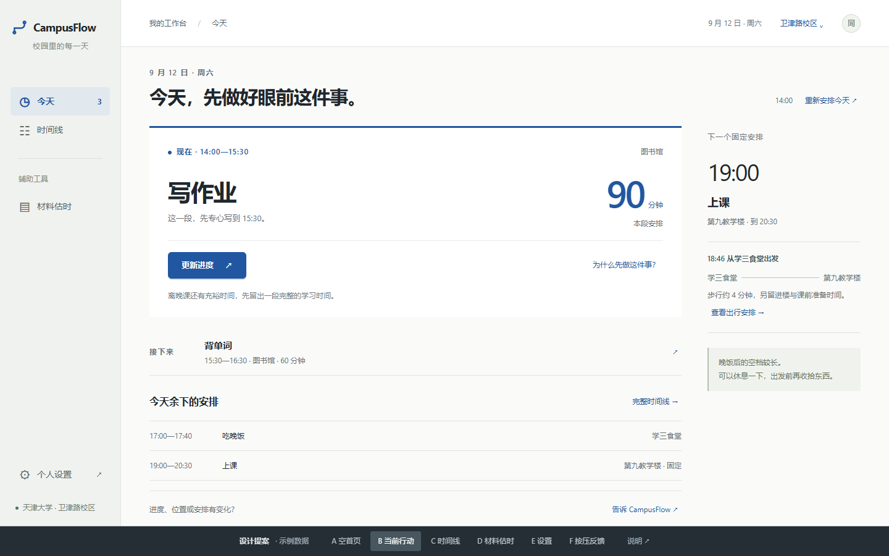

从功能展示，走向今日工作台。
当前行动有主角感，辅助工具有固定位置，信息不再都装进同一种卡片。一个浅色、克制、有触感的校园桌面工具。
历史设计提案，非当前正式界面。公开版仅保留精选归档图；完整测试截图和 JSON 仅本地留存。

当前页面的五个问题
- 相近的外框覆盖了不同职责。 当前行动、时间线、提示和表单都依赖白底、圆角、边框建立区域。
- 环境控制过于靠前。 校区、时间和解释先占据大块空间，日常任务被往下推。
- 反馈表单与当前行动竞争。 标题、解释、示例、输入和蓝按钮又形成一个完整主模块。
- 无计划首页仍有功能介绍感。 当前版本四栏介绍已只在无计划时显示；提案进一步移除，保留直接可用的入口。
- 操作和设置缺少身份差异。 轻动作常变成描边按钮；大控件、说明段落缺少连续设置行的节奏；按压语言尚不统一。
吸收的是结构，不是皮肤
| 参考 | 吸收的原则 | 在 CampusFlow 中 |
|---|---|---|
| ChatGPT 设置 | 成组连续行，左标签右值，少量细分隔线 | 右侧设置面板、三组偏好、紧凑编辑 |
| 天大大赛官网 | 字号差距、留白、横线、不对称 | 大任务名与时间，开放布局，不使用宣传视觉 |
| 天大校园系统 | 明确导航、稳定位置、可点击边界 | 固定工作台导航，环境信息放进顶栏 |
| 学习 App | 重点有强区域，不同内容用不同组件 | 行动区、时间线、估时工具和设置有不同身份 |
新的视觉语言
白色工作表面、偏暖的浅灰画布、安静的灰绿导航；蓝色只强调行动与选中状态。组件依靠字重、留白和对齐建立层次，边框是辅助。主操作实心蓝，次操作细描边，编辑与详情使用文字按钮。
当前行动的整个区域是信息，不做假按钮；时间线保持连续；只有真正的按钮、可点击行和导航才有触感。没有渐变、发光、玻璃拟态或功能卡片网格。
新旧信息架构
| 元素 | 变化 | 原因 |
|---|---|---|
| 四栏能力介绍 | 删除；保留输入示例和一行估时入口 | 让学生直接行动，而非了解功能清单 |
| 校区 / 时间 | 弱化并移到顶栏 | 背景条件保持可见，编辑按需展开 |
| 当前行动 / 下一安排 | 成为首屏中心，字号和面积拉开 | 回答“我现在最值得做什么” |
| 完整时间线 | 独立视图；首页留摘要 | 浏览下一步与核对全天是不同任务 |
| 反馈 | 移到当前行动的操作与短输入层 | 保留更新能力，避免常驻大表单 |
| 材料估时 | 辅助导航中的工作区 | 随时能找到，不与当前行动争焦点 |
| 个人设置 | 右侧面板，连续分组行 | 易扫描、少滚动，明确关闭与保存 |
归档视图
A / 空首页 · D / 材料估时 · F / 交互样式 可直接在交互原型中查看。
按下去，而不是飘起来
主按钮正常蓝 → hover 稍暗 → 按下进一步变暗、缩至 97.5%、下移 1px，阴影收进内部。160ms 自然恢复。可点击行只缩至 99.2%。键盘聚焦有轮廓；减少动态效果时取消位移。
落到 Streamlit 时最需要保护什么
最主要的风险是 rerun 后组件卸载、默认值变化与草稿清理，以及原生控件在抽屉中的焦点和浮层层级。正式落地应复用现有控件、key、事件处理与业务数据，仅调整渲染结构。不能用这份 HTML 替代正式表单，也不能为了导航重建任务、时间线或材料状态。
当前行动不新增计时器；部分估时不新增直接加入按钮；保存设置不自动重排。任务引用、已完成量、确认门禁、试排与原子发布全部沿用原实现。